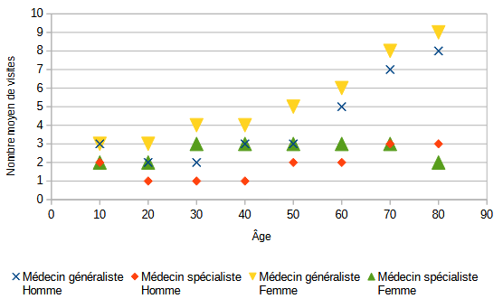

| Animaux d'élevage | Régime alimentaire | Type d'habitat |
|---|---|---|
| Vache | Herbivore | Pâturage |
| Mouton | Herbivore | Pâturage |
| Poule | Omnivore | Enclos |
| Chèvre | Herbivore | Pâturage |
| Cochon | Omnivore | Enclos |
| Dinde | Omnivore | Enclos |
| Canard | Omnivore | Mare |
| Lapin | Herbivore | Enclos |
| Cheval | Herbivore | Pâturage |
| Âne | Herbivore | Pâturage |
| Oie | Herbivore | Mare |
| Pigeon | Granivore | Enclos |
| Caille | Omnivore | Enclos |
| Faisan | Omnivore | Enclos |
| Autruche | Omnivore | Pâturage |
| Bison | Herbivore | Pâturage |
| Cerf | Herbivore | Pâturage |
| Sanglier | Omnivore | Pâturage |
| Paon | Omnivore | Enclos |
| Alpaga | Herbivore | Pâturage |
| Lama | Herbivore | Pâturage |
| Chameau | Herbivore | Pâturage |
| Dromadaire | Herbivore | Pâturage |
| Yack | Herbivore | Pâturage |
Dresser un tableau croisé d'effectif, avec en colonnes le type d'alimentation et en lignes le type d'habitat.
600 salariés travaillent dans une entreprise.
On a mesuré dans un cabinet médical le nombre de visites dans l'année en fonction de l'âge du patient et on a obtenu le graphique suivant :
Télécharger le fichier et obtenir le graphique (la forme des points est au choix).
Télécharger le fichier et obtenir un tableau croisé avec en lignes les années, en colonnes le sexe, et en champs de données la somme du nombre d'enfants.
Description des colonnes :
Vérifier que le pourcentage de filles en 2014 est d'environ 43,9%.
On étudie la croissance d'une plante en fonction de la quantité d'eau utilisée par semaine.
Construire un nuage de points avec les données suivantes :
| Quantité d'eau (mL par semaine) | Croissance (cm par semaine) |
|---|---|
| 0 | 0.5 |
| 50 | 1 |
| 100 | 2.5 |
| 150 | 3.5 |
| 200 | 4 |
| 250 | 3 |
| 300 | 2 |
| 350 | 1 |
On choisira la quantité d'eau en abscisse et la taille en ordonnée.
À partir de quelle quantité d'eau, la plante est-elle en saturation d'eau ?